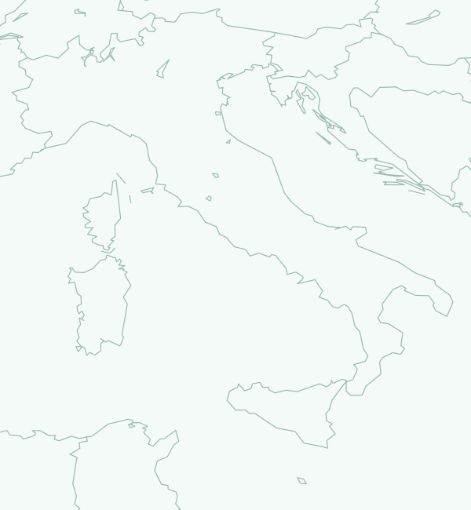

Mappa progetti
Marker per progetto. Le coordinate indicative usano un riferimento territoriale, non la posizione delle WTG.

Pipeline eolica italiana onshore e offshore letta dal punto di vista commerciale: dove, quanti MW, fase reale, finestre di cantiere e chi sta eseguendo le opere.
Caricamento dataset…
Marker per progetto. Le coordinate indicative usano un riferimento territoriale, non la posizione delle WTG.

Fotografia dei progetti sulla scala E0–E8 alla data di aggiornamento. I MW BESS non sono sommati all’eolico.
Lo stage E0–E8 indica lo stato corrente del progetto; le barre mostrano attività documentate o previste nel tempo. Una barra futura non fa avanzare lo stage finché l’avvio non è osservato.
Registro separato dal Radar canonico: mostra candidati MASE onshore e offshore prima della promozione. Non modifica KPI, Contractor View o scope coverage finché identità e stato non superano il gate di verifica.
Ordinamento commerciale; il contractor gap conta più del semplice nome del developer.
Vista inversa: azienda → progetti → MW → ruolo → stato → timing. A1/A2 confermati restano separati dai segnali B/C.